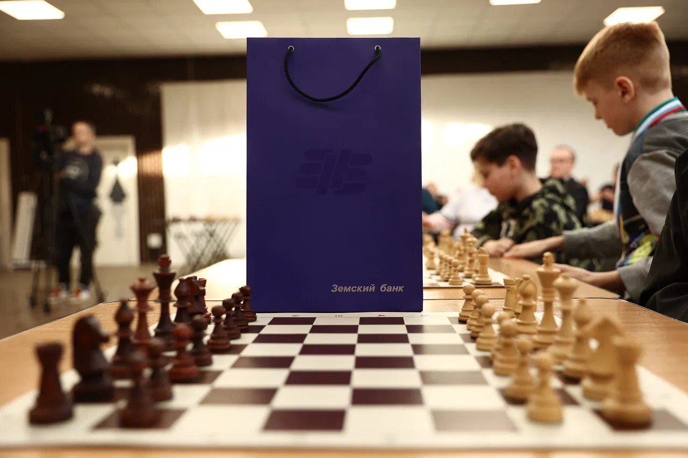
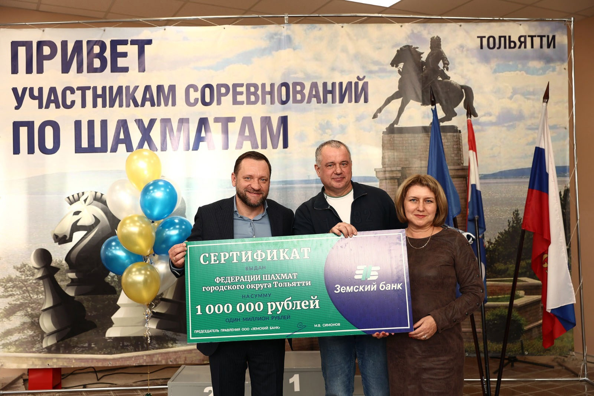

«Земский банк» чествовал лучших юных шахматистов Тольятти
В тольяттинской спортивной школе №4 «Шахматы» прошла торжественная церемония награждения победителей и призеров первенства Тольятти.
Медали, кубки, а также ценные подарки от «Земского банка» им вручали президент Федерации шахмат Тольятти (ФШТ) Александр Сергиенко, международный мастер и директор тольяттинской спортшколы №4 «Шахматы» Гульнара Салахова, а также председатель правления «Земского банка» Максим Симонов.
На награждении также присутствовал в качестве специального гостя международный мастер, двукратный чемпион России, 16-летний Алексей Гребнев.
Городское первенство прошло в три этапа. На начальной стадии в шахматных баталиях приняли участие более 500 тольяттинцев в возрасте от 6 до 18 лет. Из них в финал вышли 138 участника в пяти возрастных группах (до 9, 11, 13, 15 и 17 лет).
Серебряный призер первенства России U-10 – девятилетний Тимофей Коновалов выступал в старшей категории и занял там четвертое место, выиграв при этом в группе своих ровесников. Наград от «Земского» в качестве победителей в своих возрастных категориях удостоились Лука Азимов, Эмир Герасимов, Глеб Амплитов, Роберт Аликберов и Егор Ефимкин.
Всего чествовали 30-ть лучших юных шахматистов, завершивших Первенство города на пьедестале почета.
Банк Самарской области, который возглавляет Максим Симонов, с этого года оказывает поддержку городской Федерации шахмат. В своем обращении к участникам церемонии награждения глава «Земского банка» напомнил, что шахматы популярны на протяжении более десяти веков.
«Мне приятно, что в Тольятти есть такая прекрасная школа, где так много талантливых ребят. Спорт всегда был для нас в приоритете и мы оказываем поддержку Федерации шахмат Тольятти, чтобы здесь, на Самарской земле растили не только чемпионов страны, но и международных гроссмейстеров», — сказал Симонов, добавив, что во времена, когда многие дети увлечены компьютерными играми, важно сохранить традиционные ценности. «Шахматы дают воспитание характера и высокого интеллекта. Эта игра — отличная семейная традиция, которая есть и в моей семье, — отметил он и в качестве благотворительной помощи вручил представителям тольяттинской шахматной федерации сертификат на 1 млн рублей. Эти средства частично пойдут на ремонт спортшколы «Шахматы» и финансирование соревнований.

